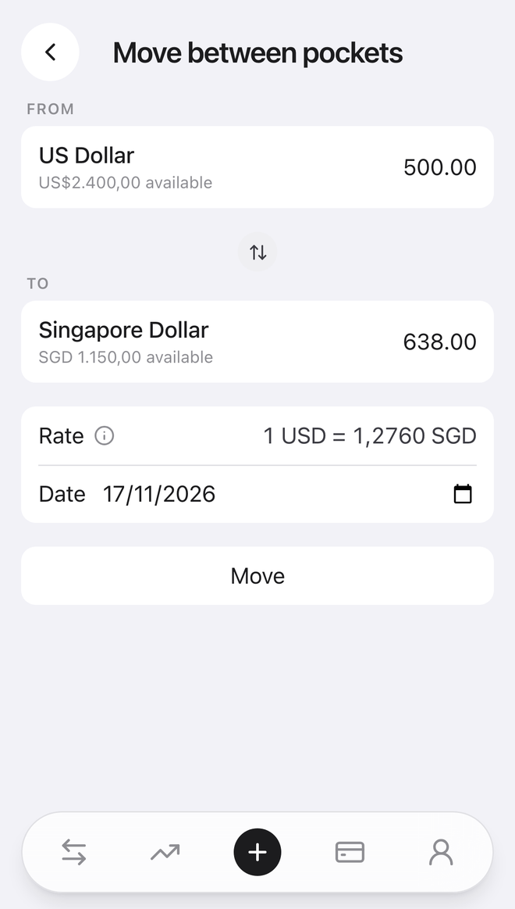

TODAY (144)Move between pockets
Rate row: 1 USD = 1,2760 SGD, worked out from the two amounts.

AFTERMove between pockets
No Rate row; only the date. Same as Transfer: nothing under the amounts while typing.

The Move screen is for one account that holds several currencies (pockets), e.g. a "Valas" account with USD and SGD: wallet › the account › Move. Invented example: move US$500 to the SGD pocket, S$638 arrives. Build 144 already removed the Cost and Exchange loss lines here; one Rate row is left. A transfer from GBP BCA to IDR BCA (two accounts) uses the Transfer screen, not this one.
TODAY (144)Move between pockets
Rate row: 1 USD = 1,2760 SGD, worked out from the two amounts.

AFTERMove between pockets
No Rate row; only the date. Same as Transfer: nothing under the amounts while typing.